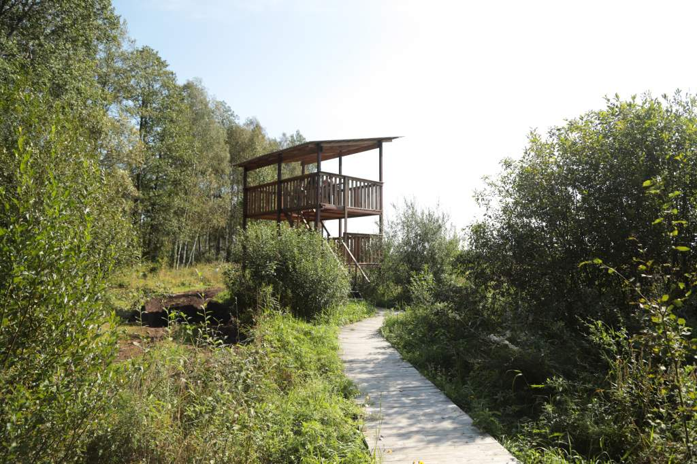
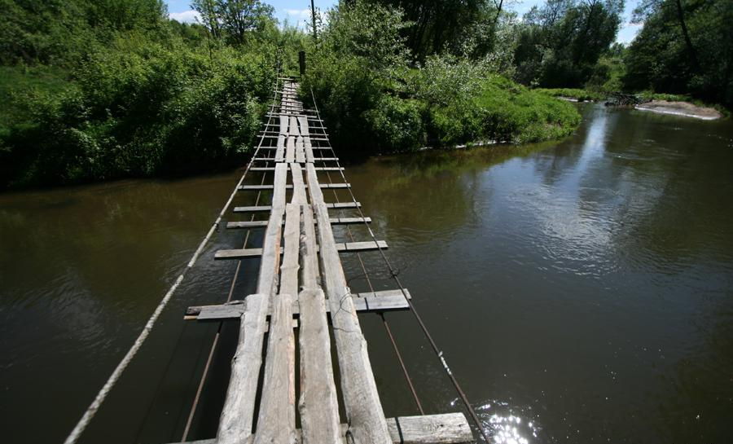

На территории Налибокской пущи есть две экотропы. Расстояние между ними примерно 20 км на авто. Инклюзивная тропа «Белокорец» появилась совсем недавно. На ней есть тактильные стенды и забавный арт-объект в виде человека из прутьев, который обнимает дерево. Это пока единственная тропа в Беларуси, доступная и комфортная для всех без исключения.
Более старая тропа в пуще – «Сябрыньский перекресток», которая названа в честь Сябрыньских озер, расположенных рядом. На ней есть и удобная смотровая вышка, и места спокойного отдыха. А недалеко от этой тропы находится зубровольер, где можно увидеть зубров. Вообще, в Налибокской пуще встречаются самые разные животные, а если повезет, то и стадо диких пугливых косуль можно увидеть в естественной среде обитания. Экскурсия по этой экотропе обойдется в 5 BYN для одного взрослого.
Кроме прогулок по экотропам, в Налибокской пуще можно найти и другие занятия на твой вкус. Например, съездить к круглому озеру Кромань, покататься на велосипеде по лесным тропам или сплавиться на байдарке по реке Ислочь.
Ивьевский район, Гродненская область
Расстояние от Минска: 90 км
Длина экотропы: 1 км